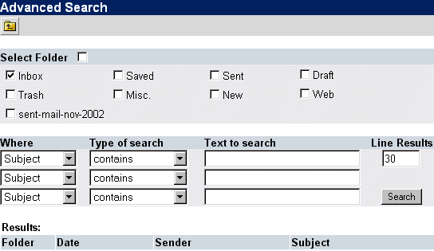

|
Az alábbiak szerepelnek az Emelt szintû keresés oldalán. Itt tudsz komolyabb keresési feltételeket szabni mint a
Keresés ikonsornál
. Az emelt szintû kereséshez a (
 ) gombra kattintva juthatsz a
Fõ ikonsorban
. ) gombra kattintva juthatsz a
Fõ ikonsorban
.

Az emelt szintû keresés oldalának referencia táblázata:
| Kifejezés | Mûvelet |
| Válasszon mappát | Itt választhatod ki mely mappákban keresse az Open Webmail a leveleket, a mappák melletti jelölõnégyzetek segítségével. A "Válasszon mappát" felirat melletti jelölõnégyzettel minden mappát kijelölhetsz. |
| Hol | Megadhatod az üzenetek mely részében akarsz keresni. |
| Keresés típusa | A keresés módját adja meg. |
| Keresett szöveg | Ide írhatod a keresendõ szöveget. |
| Ennyi találatig | Megadhatod hány találatot jelenítsen meg a rendszer. |
| Találatok száma | Ez alatt jelenik meg az összes vonatkozó üzenet, miután rákattintottál a "Keresés" gombra. |
|